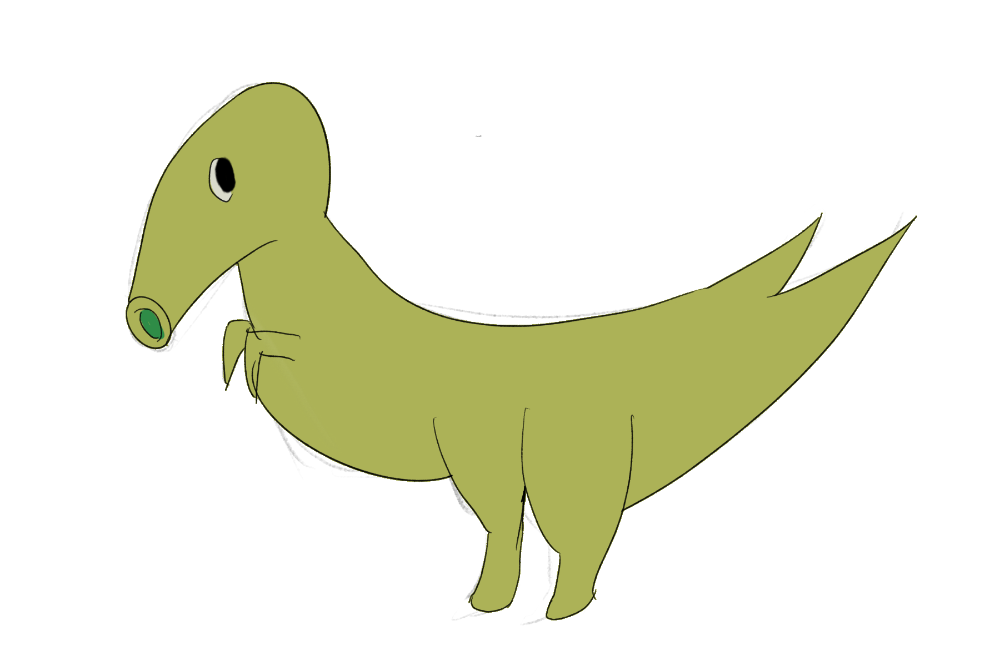

Melodia
Instead of dual patterning, Melodians have triple patterning. Their language consists of single frequencies, which combine into chords, and only then combine into meaningful melodies. Their language is named after these beautiful melodies.
